대기환경산업기사 (2015-05-31 기출문제)
1과목: 대기오염개론
1. 대체연료 자동차에 관한 설명으로 옳지 않은 것은?
- 전기자동차는 1회 충전당 주행거리가 휘발유 자동차의 10배 정도이다.
- 메탄올자동차는 발열량이 휘발유의 절반 정도 이므로 연료탱크의 크기를 2배로 하면 1회 충전당 얻을 수 있는 항속거리를 휘발유자동차와 유사하게 할 수 있다.
- 메탄올자동차는 메탄올의 윤활기능이 휘발유에 비해 매우 약하므로 금속이나 플라스틱 재료 모두를 침식시킨다.
- 수소자동차는 다른 에너지원에 비해 밀도가 낮으므로 생산된 단위에너지당 연료 무게가 작고, 연소에 의해 배출되는 가스상 오염물질의 양이 매우 적은 장점을 가지고 있다.
(정답률: 87%)

2. 다이옥신의 특징 중 ( )안에 가장 적합한 것은?
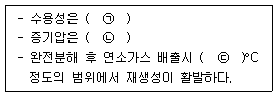
- ㉠ 높다, ㉡ 낮다, ㉢ 1200 ~ 1300
- ㉠ 높다, ㉡ 높다, ㉢ 300 ~ 400
- ㉠ 낮다, ㉡ 낮다, ㉢ 300 ~ 400
- ㉠ 낮다, ㉡ 높다, ㉢ 1200 ~ 1300
(정답률: 79%)
3. 흑체에서 복사되는 에너지 중 파장 λ와 λ+△λ사이에 들어있는 에너지량(Eλ)을 아래 식으로 표현하는 것과 관련한 법칙은?
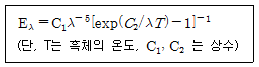
- 스테판볼츠만의 법칙
- 비인의 변위법칙
- 플랑크의 법칙
- 웨버훼이너의 법칙
(정답률: 73%)
4. 다음 가스상 대기오염물질 중 식물에 영향이 가장 크며, 잎의 끝 또는 가장자리가 타거나 발육물질 등 특히 식물의 어린 잎에 피해가 큰 물질은?
- 오존
- 아황산가스
- 질소산화물
- 플루오르화수소
(정답률: 76%)
5. 염소를 배출하는 공장이 있다. 이 공장에서 배출하는 염소농도가 0°C, 1기압에서 0.75ppm 일 때 ㎍/m3 농도로 환산하면?
- 2254
- 2377
- 2438
- 2536
(정답률: 79%)
6. 대기오염물질의 확산에 관한 설명으로 옳은 것은?
- 굴뚝에서 연기가 나올 때 굴뚝연기 배출속도가 바람의 속도보다 크면 다운드래프트 현상을 일으킨다.
- 굴뚝높이를 주변의 건물보다 1.5배 높게 하여 다운드래프트 현상을 방지한다.
- 유효굴뚝 높이는 굴뚝높이에 연기의 수직상승높이를 뺀 것이다.
- 다운워시 현상을 없애려면 굴뚝에서의 수직 배출속도를 굴뚝 높이 풍속의 2배 이상이 되도록 토출속도를 높인다.
(정답률: 66%)
7. 바람에 관한 설명으로 옳지 않은 것은?
- 북반구의 경도풍은 저기압에서는 시계바늘 진행방향으로 회전하면서 아래로 침강하면서 분다.
- 낮에 바다에서 육지로 부는 해풍은 밤에 육지에서 바다로 부는 육풍보다 보통 강하다.
- 산풍은 보통 곡풍보다 더 강하다.
- 휀풍은 산맥의 정상을 기준으로 풍상쪽 경사면을 따라 공기가 상승하면서 건조단열변화를 하기 때문에 평지에서보다 기온이 약 1°C/100m의 율로 하강한다.
(정답률: 68%)
8. 굴뚝의 유효고도가 40m이다. 일반적인 조건이 같을 때 최대 지표농도를 절반으로 감소시키려면 유효고도를 얼마만큼 증가시켜야 하는가?
- 약 10m
- 약 17m
- 약 22m
- 약 28m
(정답률: 71%)
9. 대기오염물질의 확산과 관련된 스모그현상과 기온역전에 관한 설명으로 옳지 않은 것은?
- 로스엔젤레스 스모그사건은 광화학스모그에 의한 침강성역전이다.
- 런던스모그 사건은 산화반응에 의한 것으로 습도는 70% 이하조건에서 발생하였다.
- 침강성역전은 고기압권내에서 공기가 하강하에 생기며, 주·야 구분없이 발생할 수 있다.
- 방사성역전은 밤과 아침사이에 지표면이 냉각되어 공기온도가 낮아지기 때문에 발생한다.
(정답률: 85%)
10. 일산화탄소에 관한 설명으로 가장 거리가 먼 것은?
- 난용성이므로 강우에 의한 영향을 거의 받지 않는다.
- 대기 중에서 일산화탄소의 평균 체류시간은 발생량과 대기 중 평균농도로부터 5~10년 정도로 추정된다.
- 위도별로 보면 북위 50도 부근에서 최대치를 보이는 경향이 있다.
- 토양박테리아의 활동에 의해 이산화탄소로 산화됨으로써 대기 중에서 제거된다.
(정답률: 75%)
11. 다음 대기오염물질 중 2차 오염물질에 해당하는 것은?
- SiO2
- H2O2
- 방향족 탄화수소
- CO2
(정답률: 78%)
12. 열섬효과(heat island effect)에 관한 설명으로 옳지 않은 것은?
- 도시 외곽지역에서는 도시중심지역에 비하여 고온의 공기층을 형성하게 되는데 이를 열섬(heat island)현상이라 한다.
- 도시지역과 교외지역은 풍속이나 대기안정도의 특성이 서로 다르고, 열섬의 규모와 현상은 시공간적으로 다양하게 나타난다.
- 열섬현상의 원인으로서는 인공열 발생증가, 건물 등 구조물에 의한 거칠기 변화, 지표면에서의 증발잠열 차이 등이다.
- 도시지역에서의 풍속은 교외지역에 비하여 평균적으로 25~30% 감소하며, 대기오염물질이 응결핵으로 작용하여 운량과 강우량의 증가 현상이 나타날 수 있다.
(정답률: 83%)
13. 다음 중 기후·생태계 변화 유발물질과 거리가 먼 것은?
- 육불화황
- 메탄
- 수소염화불화탄소
- 염화나트륨
(정답률: 85%)
14. CFC-12의 화학식으로 옳은 것은?
- CHFCl2
- CF3Br
- CF3Cl
- CF2Cl2
(정답률: 70%)
15. 다음 오염물질 중 사지 감각이상, 구음장애, 청력장애, 구실성 시야협착, 소뇌성 운동질환 등의 주요증상이 특징적이고, Hunter-Russel 증후군으로도 일컬어지고 있는 오염물질은?
- 메틸수은
- 납
- 크롬
- 카드뮴
(정답률: 73%)
16. A사업장 굴뚝에서의 암모니아 배출가스가 30mg/m3로 일정하게 배출되고 있는데, 향후 이 지역 암모니아 배출허용기준이 20ppm 으로 강화될 예정이다. 방지시설을 설치하여 강화된 배출허용기준치의 70%로 유지하고자 할 때, 이 굴뚝에서 방지시설을 설치하여 저감해야 할 암모니아의 농도는 몇 ppm 인가?
- 11.5ppm
- 16.8ppm
- 20.8ppm
- 25.5ppm
(정답률: 54%)
17. 오염물질의 피해에 관한 설명 중 [보기]에 가장 적합한 것은?
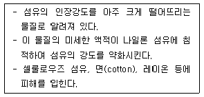
- 라돈
- 오존
- 황산화물
- 이산화질소
(정답률: 68%)
18. 경도풍은 다음의 3가지 힘이 평형을 이루면서 부는 바람을 말한다. 이와 관련이 가장 적은 힘은?
- 마찰력
- 기압경도력
- 원심력
- 전향력
(정답률: 61%)
19. 파장 5210Å 인 빛 속에서 밀도가 1.25g/cm3 이고, 직경 0.3μm인 기름 방울의 분산면적비가 4일 때 먼지농도가 0.4mg/m3이라면 가시거리(V)는? (단,
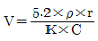
를 이용)- 609m
- 8⑤m
- 1000m
- 1230m
(정답률: 61%)
20. 대류권내 공기의 구성물질을 [농도가 가장 안정된 물질, 쉽게 농도가 변하지 않는 물질, 쉽게 농도가 변하는 물질]의 3가지로 분류할 때, 다음 중 “쉽게 농도가 변하는 물질”에 해당하는 것은?
- Ne
- NO2
- Ar
- CO2
(정답률: 76%)
2과목: 대기오염 공정시험 기준(방법)
21. 일정한 굴뚝을 거치지 않고 외부로 비산배출되는 먼지측정을 위한 하이볼륨에어샘플러(High Volum Air Sampler)법에 관한 설명으로 옳지 않은 것은?
- 풍속이 0.5m/초 미만 또는 10m/초 이상되는 시간이 전 채취시간의 50% 미만일 때 풍속보정계수는 1.0을 적용한다.
- 전 시료채취 기간중 주 풍향이 45°~90°변할 때 풍향보정계수는 1.2를 적용한다.
- 따로 시료채취를 하는 동안에 따로 그 지역을 대표할 수 있는 지점에 풍향풍속계를 설치하여 전 채취시간 동안의 풍향풍속을 깃록하지만, 연속기록 장치가 없을 경우에는 적어도 1시간 간격으로 같은 지점에서의 3회 이상 풍향풍속을 측정하여 기록한다.
- 시료채취장소는 원칙적으로 측정하려고 하는 발생원의 부지경계선상에 선정하며 풍향을 고려하여 그 발생원의 비산먼지 농도가 가장 높을 것으로 예상되는 지점 3개소 이상을 선정한다.
(정답률: 69%)
22. 배출가스상 물질시료채취 방법 중 채취부에 관한 설명으로 옳지 않은 것은?
- 수은 마노미터는 대기와 압력차가 50mmHg이상인 것을 쓴다.
- 유리로 만든 가스건조탑을 쓰며, 건조제로는 입자상태의 실리카겔, 염화칼슘 등을 쓴다.
- 펌프는 배기능력 0.5~5L/분인 밀폐형인 것을 쓴다.
- 가스미터는 일회전 1L의 습식 또는 건식가스미터로 온도계와 압력계가 붙어 있는 것을 쓴다.
(정답률: 76%)
23. 배출가스 중 금속화합물 분석을 위한 시료가 “셀룰로스 섬유제 여과지를 사용한 것”일 때의 처리방법으로 가장 적합한 것은?
- 저온 회화법
- 마이크로파 산분해법
- 질산-과산화수소수법
- 질산법
(정답률: 64%)
24. 철강공장의 아크로와 연결된 개방형 여과집진시설에서 배출되는 먼지채취방법에 대한 규정으로 가장 거리가 먼 것은?
- 등속흡인할 필요가 없으며 채취관은 대구경 흡인노즐(보통 10mm정도)이 연결된 흡인관을 사용한다.
- 흡인관을 측정점까지 밀어넣고 출강에서 다음 출강 개시전까지를 먼지 배출상태를 고려하여 적당한 시간간격으로 나누어 시료를 채취하여 구한 먼지농도를 출강에서 다음 출강개시전까지의 평균먼지농도로 간주 한다.
- 시료채취시 측정공을 헝겊등으로 밀폐할 필요는 없으며 건옥백하우스의 경우는 장입 및 출강시 20±5L/min의 유속으로 배출가스를 흡인한다.
- 한 개의 원통형 여과지에 포집된 1회 먼지포집량은 20mg이상 50mg이하로 함을 원칙으로 한다.
(정답률: 66%)
25. 0.02M의 황산 30mL를 중화시키는데 필요한 0.1N 수산화나트륨 용액의 양(mL)은?
- 3mL
- 6mL
- 12mL
- 20mL
(정답률: 60%)
26. 굴뚝 배출가스 중 총 탄화수소의 측정방법에 관한 설명으로 옳지 않은 것은?
- 교정가스는 농도를 알고 있는 희석가스를 사용한다.
- 반응시간은 오염물질농도의 단계변화에 따라 최종값의 90%에 도달하는 시간으로 한다.
- 스팬값으로 측정기기의 측정범위는 보통 배출허용기준의 0.5~1.2배를 적용한다.
- 스팬값으로 측정범위가 없는 경우에는 예상농도의 1.2~3배의 값을 사용한다.
(정답률: 55%)
27. 연도 배출가스 중 오염물질의 연속 측정에 사용하는 비분산 정필터형 적외선 가스 분석계의 구성에 관한 설명으로 옳지 않은 것은?
- 광원은 원칙적으로 니크롬선 또는 탄화규소의 저항체에 전류를 흘려 가열한 것을 사용한다.
- 회전섹터는 시료가스 중에 포함되어 있는 간접성분가스의 흡수파장역의 적외선을 흡수제거하기 위하여 사용한다.
- 광학필터에는 가스필터와 고체필터가 있으며, 단독 또는 적절히 조합하여 사용한다.
- 비교셀은 아르곤과 같은 불활성 기체를 몰입하여 사용한다.
(정답률: 60%)
28. 환경대기 중 휘발성 유기화합물(VOCs)의 시험방법 중 흡착관의 안정화(Conditioning)방법으로 가장 적합한 것은?
- 흡착관을 사용하기 전에 일달착기에 의해서 보통 350°C에서 질소가스 50mL/min으로 적어도 2hr동안 안정화시킨 후 사용한다.
- 흡착관을 사용하기 전에 열탈착기에 의해서 보통 350°C에서 헬륨가스 50mL/min으로 적어도 2hr동안 안정화시킨 후 사용한다.
- 흡착관을 사용하기 전에 열탈착기에 의해서 보통 850°C에서 헬륨가스 5mL/min으로 적어도 1hr동안 안정화시킨 후 사용한다.
- 흡착관을 사용하기 전에 열탈착기에 의해서 보통 850°C에서 헬륨가스 5mL/min으로 적어도 1hr동안 안정화시킨 후 사용한다.
(정답률: 59%)
29. 굴뚝 반경 1.3m인 원형굴뚝에서 먼지를 채취하고자 할 때 측정점수는?
- 4
- 8
- 12
- 16
(정답률: 83%)
30. 다음 중 굴뚝 배출가스 내 비소화합물의 분석방법으로 가장 적합한 것은?
- 가스크로마토그래프법
- 원자흡수분광광도법(원자흡광광도법)
- 비분산 적외선 분석법
- 이온전극법
(정답률: 76%)
31. 자외선 가시선 분광법에 의해 배출가스 중 비소를 분석하고자 할 경우에 관한 설명으로 옳지 않은 것은?
- 정량범위는 2~10μg이며, 정밀도는 2~10%이다.
- 채취시료를 전처리하는 동안 비소의 손실가능성이 있으므로 전처리 방법으로 마이크로파산분해법이 권장된다.
- 황화수소의 영향은 아세트산납으로 제거가능하다.
- 메틸비소화합물은 pH 10에서 메틸염화비소(methylarsine)를 생성하여 흡수용액과 착물을 형성하고 이의 영향은 아세트산납으로 제거가능하다.
(정답률: 61%)
32. 다음은 지하공간 및 환경대기중의 벤조(a)피렌 농도 측정을 위한 형광분광광도법이다. ( )안에 알맞은 것은?
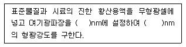
- ㉠ 340, ㉡ 450
- ㉠ 470, ㉡ 540
- ㉠ 560, ㉡ 620
- ㉠ 650, ㉡ 710
(정답률: 69%)
33. 굴뚝 배출가스 중 납화합물 분석을 위한 자외선 가시선 분광법에 관한 설명으로 옳은 것은?
- 납착염의 흡광도를 450nm에서 측정하여 정량하는 방법이다.
- 시료 중 납이온이 디티존과 반응하여 생성되는 납 디티존 착염을 사염화탄소로 추출한다.
- 납착염의 흡광도는 시간이 경과하면 분해되므로 20°C 이하의 빛이 차단된 곳에서 단시간에 측정한다.
- 시료 중 납성분 추출시 시안화칼륨 용액으로 세정조작을 수회 반복하여도 무색이 되지 않는 이유는 다량의 비소가 함유되어 있기 때문이다.
(정답률: 58%)
34. 환경대기 중의 질소산화물 농도를 측정하기 위한 야콥스호흐하이저법에 관한 설명으로 가장 거리가 먼 것은?
- 포집시료는 적어도 6주간은 안전하다.
- 방해물질인 아황산가스는 분석전에 과산화수소를 첨가하여 황산으로 변화시키는데 따라 제거된다.
- 수산화칼륨용액에 시료대기를 흡수시키면 대기중의 이산화질소가 아질산칼륨용액으로 변화될 때 생성된 아질산이온을 발색시켜 740nm에서 측정된다.
- 0.04μg NO2-/mL의 농도는 1cm셀을 사용했을 때 0.02 의 흡광도에 해당된다.
(정답률: 57%)
35. 상온 상압의 공기유속을 피토우관으로 측정한 결과, 그 동압이 6mmH2O이었다. 공기유속은? (단, 피토우관계수 = 1,5, 중력가속도 = 9.8m/sec2, 습배기가스 단위 체적당 무게 = 1.3kg/m3)
- 13.2m/sec
- 14.3m/sec
- 15.2m/sec
- 16.5m/sec
(정답률: 63%)
36. 굴뚝 배출가스 중 포름알데히드를 측정하기 위해 적용되는 분석방법은?
- 페놀디술폰산법
- 중화법
- 오르토톨리딘법
- 크로모트로핀산법
(정답률: 73%)
37. 다음 중 4-아미노 안티피린 용액과 페리시안산 칼륨용액을 가하여 얻어진 적색액의 흡광도를 측정하여 정량하는 오염물질은?
- 포름알데히드
- 페놀화합물
- 클로로포름
- 벤젠
(정답률: 72%)
38. 가스크로마토그래프법에서 분리관 내경이 4mm일 경우 사용되는 흡착제 및 담체의 입경범위로 옳은 것은? (단, 기체-고체 크로마토그래프법)
- 110~125μm
- 149~177μm
- 177~250μm
- 280~350μm
(정답률: 59%)
39. 다음은 이온크로마토그래프법 중 써프렛서에 관한 설명이다. ( )안에 알맞은 것은?
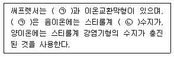
- ㉠ 덤벨형, ㉡ 강산형
- ㉠ 덤벨형, ㉡ 약산형
- ㉠ 관형, ㉡ 강산형
- ㉠ 관형, ㉡ 약산형
(정답률: 72%)
40. 굴뚝 배출가스상 물질 시료채취를 위한 도관에 관한 설명으로 옳지 않은 것은?
- 도관은 가능한 한 수평으로 연결해야 하고, 하나의 도관으로 여러 개의 측정기를 사용할 경우 각 측정기 앞에서 도관을 직렬로 연결하여 사용한다.
- 도관의 안지름은 도관의 길이, 흡인가스의 유량, 응축수에 의한 막힘 또는 흡인펌프의 능력 등을 고려해서 4~25mm로 한다.
- 도관의 길이는 되도록 짧게 하고, 부득이 길게해서 쓰는 경우에는 이음매가 없는 배관을 써서 접속 부분을 적게 하고, 76m를 넘지 않도록 한다.
- 도관으로 부득이 구부러진 관을 쓸 경우에는 응축수가 흘러나오기 쉽도록 경사지게 (5°이상)하고 시료 가스는 아래로 향하게 한다.
(정답률: 61%)
3과목: 대기오염방지기술
41. 다음 각종 먼지 중 진비중/겉보기 비중이 가장 큰 것은?
- 카본블랙
- 미분탄보일러
- 시멘트 원료분
- 골재 드라이어
(정답률: 82%)
42. 흡수장치의 총괄이동 단위높이(HOG)가 1.0m이고, 제거율이 95%라면, 이 흡수장치의 높이는 약 몇 m로 하여야 하는가?
- 1.2m
- 3.0m
- 3.5m
- 4.2m
(정답률: 68%)
43. 탄소 87%, 수소 13%의 연료를 완전연소 시 배기가스를 분석한 결과 O2는 5% 이었다. 이 때 과잉공기량은?
- 1.3 Sm3/kg
- 3.5 Sm3/kg
- 4.6 Sm3/kg
- 6.9 Sm3/kg
(정답률: 37%)
44. 다음은 배가스 탈황, 탈질공정에 관한 설명이다. ( )안에 가장 적합한 것은?
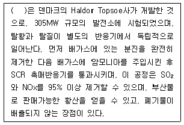
- 전자빔공정
- 산화구리공정
- DESONOX 공정
- WSA-SNOX 공정
(정답률: 70%)
45. 입경측정방법 중 간접측정방법이 아닌 것은?
- 표준체측정법
- 관성충돌법
- 액상침강법
- 광산란법
(정답률: 62%)
46. 유해가스를 처리하기 위한 흡수액의 구비요건으로 옳지 않은 것은?
- 용해도가 높아야 한다.
- 휘발성이 커야 한다.
- 점성이 비교적 작아야 한다.
- 용매의 화학적 성질과 비슷해야 한다.
(정답률: 75%)
47. 염소농도가 0.68%인 배기가스 2500Sm3/hr을 Ca(OH)2의 현탁액으로 세정 처리하여 염소를 제거하려 한다. 이론적으로 필요한 Ca(OH)2양(kg/hr)은?
- 약 56
- 약 66
- 약 76
- 약 86
(정답률: 50%)
48. 다음 설명하는 연소장치로 가장 적합한 것은?
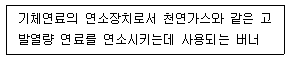
- 선회버너
- 방사형버너
- 유압분무식 버너
- 건식버너
(정답률: 66%)
49. 흡착에 대한 다음 설명으로 옳은 것은?
- 화학적 흡착은 흡착과정이 가역적이므로 흡착제의 재생이나 오염가스의 회수에 매우 편리하다.
- 물리적 흡착은 흡착과정에서의 발열량이 화학적 흡착보다 많다.
- 일반적으로 물리적 흡착에서 흡착되는 양은 온도가 낮을수록 많다.
- 물리적 흡착은 분자간의 결합이 화학적 흡착에서보다 더 강하다.
(정답률: 68%)
50. 액화프로판 440kg을 기화시켜 8Sm3/h로 연소시킨다면 약 몇 시간 사용할 수 있는가? (단, 표준상태 기준)
- 10시간
- 18시간
- 24시간
- 28시간
(정답률: 62%)
51. 배출가스 중 황산화물을 처리하기 위해 물을 사용하는 충전탑으로 처리한 결과 순화수의 황산함량은 0.049g/L 이었다. 이 순화수의 pH는?
- 1
- 2
- 2.7
- 3
(정답률: 52%)
52. 세정식 집진장치에서 회전원판에 의해 분무액이 미립화 될 경우 원심력과 표면장력에 의해 물방울 직경을 측정할 수 있다. 회전원판의 반경 4cm, 회전수 3600rpm 일 때 물방울 직경은?
- 약 123μm
- 약 186μm
- 약 278μm
- 약 396μm
(정답률: 51%)
53. 배출가스중의 HCl을 충전탑에서 수산화칼슘수용액과 향류로 접촉시켜 흡수 제거시킨다. 충전탑의 높이가 2.5m일 때 90%의 흡수효율을 얻었다면 높이를 4m로 높이면 흡수효율은 몇 % 인가? (단, 이동단위수
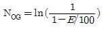
로 계산되고 E는 효율이며 HOG는 일정하다.)- 92.5
- 94.5
- 95.3
- 97.5
(정답률: 42%)
54. 다음 중 C/H의 크기순으로 옳게 배열된 것은?
- 올레핀계 ＞ 나프틸계 ＞ 아세틸렌 ＞ 프로필렌 ＞ 프로판
- 나프틸계 ＞ 올레핀계 ＞ 아세틸렌 ＞ 프로판 ＞ 프로필렌
- 올레핀계 ＞ 나프틸계 ＞ 프로필렌 ＞ 프로판 ＞ 아세틸렌
- 나프틸계 ＞ 아세틸렌 ＞ 올레핀계 ＞ 프로필렌 ＞ 프로판
(정답률: 73%)
55. 세정식 집진장치에서 입자가 포집되는 원리로 거리가 먼 것은?
- 가스의 증습에 의하여 입자가 서로 응집하는 원리
- 가스의 선회운동으로 입자를 분리포집하는 원리
- 액적등에 입자가 관성 충돌하여 부착하는 원리
- 미립자의 확산에 의하여 액적과의 접촉을 양호하게 하는 원리
(정답률: 53%)
56. A공장의 전기집진장치에서 원통형 집진극의 반경이 8cm이고, 길이가 1.5m이다. 처리 가스의 유속을 1.5m/sec로 하고 먼지입자가 집진극을 향하여 이동하는 이동분리속도가 10cm/sec라면 먼지제거 효율은?
- 약 92%
- 약 94%
- 약 96%
- 약 98%
(정답률: 32%)
57. 액체연료 1kg을 완전연소 하는데 필요한 이론공기량 Ao(Sm3/kg)의 계산식으로 옳은 것은? (단, C, H, O, S는 연료 1kg 중 각 성분원소의 중량분율을 나타낸다.)
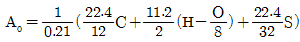
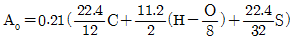
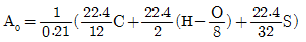
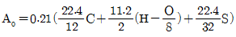
(정답률: 70%)
58. 탄소 1kg 연소시 이론적으로 30000kcal의 열이 발생하고, 수소 1kg 연소시 이론적으로 34100kcal의 열이 발생된다면, 에탄 2kg 연소시 이론적으로 발생되는 열량은?
- 30820kcal
- 55600kcal
- 61640kcal
- 74100kcal
(정답률: 51%)
59. 배출가스 0.4m3/s를 폭 5m, 높이 0.2m, 길이 10m의 중력식 침강집진장치로 집진제거한다면 처리가스 내의 입경 10μm 먼지의 집진효율은? (단, 먼지밀도 1.10g/cm3, 배출가스밀도 1.2kg/cm3, 처리가스점도 1.8×10-4g/cm·s, 단수 1, 집진효율
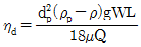
)- 약 22%
- 약 42%
- 약 63%
- 약 81%
(정답률: 45%)
60. 다음 중 석회석 주입에 의한 황산화물 제거방법으로 옳지 않은 것은?
- 대형보일러에 주로 사용되며, 배기가스의 온도가 떨어지는 단점이 있다.
- 연소로 내에서 아주 짧은 접촉시간과 아황산가스가 석회분말의 표면안으로 침투되기 어려우므로 아황산가스 제거효율이 낮은 편이다.
- 석회속 값이 저렴하므로 재생하여 쓸 필요가 없고 석회석의 분쇄와 주입에 필요한 장비외에 별도의 부대시설이 크게 필요없다.
- 배기가스 중 재 와 석회석이 반응하여 연소로 내에 달라붙어 압력손실을 증가시키고, 열전달을 낮춘다.
(정답률: 51%)
4과목: 대기환경 관계 법규
61. 대기환경보전법령상 대기오염 경보단계별 조치사항과 거리가 먼 것은?
- 주의보 : 자동차 사용제한 명령
- 경보 : 사업장의 연료사용량 감축권고
- 중대경보 : 주민의 실외활동 금지요청
- 중대경보 : 사업장의 조업시간 단축명령
(정답률: 76%)
62. 대기환경보전법규상 수도권대기환경청장, 국립환경과학원장 또는 한국환경공단이 설치하는 대기오염 측정망의 종류에 해당하지 않는 것은?
- 도시지역 또는 산업단지 인근지역의 특정대기 유해물질(중금속을 제외한다)의 오염도를 측정하기 위한 유해대기물질측정망
- 산성 대기오염물질의 건성 및 습성 침착량을 측정하기 위한 산성강하물측정망
- 도로변의 대기오염물질 농도를 측정하기 위한 도로변대기측정망
- 황사 등 장거리이동 대기오염물질의 성분을 집중 측정하기 위한 대기오염집중측정망
(정답률: 73%)
63. 악취방지법규상 배출허용기준 및 엄격한 배출허용기준의 설정범위와 관련한 다음 설명 중 옳지 않은 것은?
- 배출허용기준의 측정은 복합악취를 측정하는 것을 원칙으로 하지만 사업자의 악취물질 배출 여부를 확인할 필요가 있는 경우에는 지정악취물질을 측정할 수 있다.
- 복합악취의 시료채취는 사업장안에 높이 5m이상의 일정한 악취배출구와 다른 악취발생원이 섞여 있는 경우에는 부지경계선 및 배출구에서 각각 채취한다.
- “배출구”라 함은 악취를 송풍기 등 기계장치 등을 통하여 강제로 배출하는 통로(자연환기가 되는 창문 통기관 등을 제외한다.
- 부지경계선에서 복합악취의 공업지역에서의 배출허용기준(희석배수)은 1000 이하이다.
(정답률: 67%)
64. 대기환경보전법규상 자동차연료 제조기준 중 경유의 10% 잔류탄소량(%) 기준은?
- 0.10 이하
- 0.15 이하
- 0.20 이하
- 0.50 이하
(정답률: 45%)
65. 대기환경보전법규상 환경부령으로 정하는 바에 따라 자가방지시설을 설계·시공하고자 하는 사업자가 시·도시사에게 제출해야 하는 서류로 가장 거리가 먼 것은?
- 기술능력 현황을 적은 서류
- 공사비내역서
- 공정도
- 방지시설의 설치명세서와 그 도면
(정답률: 67%)
66. 대기환경보전법규상 개선명령 이행 등과 관련한 환경부령으로 정하는 대기오염도 검사기관으로 거리가 먼 것은?
- 한국화학연구소
- 한국환경공단
- 특별자치도의 보건환경연구원
- 지방환경청
(정답률: 68%)
67. 다음은 대기환경보전법규상 비산먼지의 발생을 억제하기 위한 시설의 설치 및 필요한 조치기준에 관한 사항이다. ( )안에 알맞은 것은? (단, 배출공정이 야적(분체상물질을 야적하는 경우에만 해당)이다.)
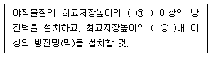
- ㉠ 1/4, ㉡ 1.25
- ㉠ 1/3, ㉡ 1.25
- ㉠ 1/2, ㉡ 1.2
- ㉠ 1/4, ㉡ 1.2
(정답률: 61%)
68. 다음은 다중이용시설 등의 실내공기질 관리법규상 신축 공동주택의 실내공기질 측정에 관한 사항이다. ( )안에 공통으로 알맞은 것은?
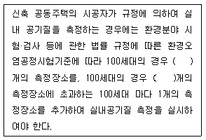
- 2
- 3
- 5
- 10
(정답률: 66%)
69. 대기환경보전법령상 초과부과금 산정기준에서 다음 대기오염물질 중 1킬로그램당 부과금액이 가장 낮은 물질은?
- 불소화합물
- 황화수소
- 암모니아
- 염화수소
(정답률: 49%)
70. 대기환경보전법규상 대기오염물질 배출시설의 설치가 불가능한 지역에서 배출시설 설치허가 또는 신고를 하지 아니하고 배출시설을 설치한 경우의 1차 행정처분기준으로 옳은 것은?
- 조업정지
- 개선명령
- 폐쇄명령
- 경고
(정답률: 62%)
71. 대기환경보전법규상 비산먼지 발생을 억제하기 위한 시설의 설치 및 필요한 조치에 관한 기준 중 수송 공정의 측면 살수시설설치 규격기준으로 옳은 것은?
- 살수길이는 수송차량 전체길이의 1.5배 이상, 살수압은 1.5kg/cm2 이상으로 한다.
- 살수길이는 수송차량 전체길이의 1.5배 이상, 살수압은 3kg/cm2 이상으로 한다.
- 살수길이는 수송차량 전체길이의 3배 이상, 살수압은 1.5kg/cm2 이상으로 한다.
- 살수길이는 수송차량 전체길이의 3배 이상, 살수압은 3kg/cm2 이상으로 한다.
(정답률: 57%)
72. 환경정책기본법령상 우리나라 대기환경기준으로 설정된 항목에 해당하지 않는 것은?
- 납
- 일산화탄소
- 이산화탄소
- 벤젠
(정답률: 50%)
73. 환경정책기본법령상 오존(O3)의 대기환경기준으로 옳은 것은? (단, 8시간평균치 기준)
- 0.10ppm 이하
- 0.06ppm 이하
- 0.⑤ppm 이하
- 0.02ppm 이하
(정답률: 60%)
74. 대기환경보전법령상 자동차제작자에게 부과하는 매출액 산정 및 위반행위 정도에 따른 과징금의 부과기준에 따른 과징금 산정방법 관계식으로 옳은 것은?(2016년 12월 27일 개정된 규정 적용됨)
- 총매출액 × 2/100 × 가중부과계수
- 총매출액 × 3/100 × 가중부과계수
- 총매출액 × 5/100 × 가중부과계수
- 총매출액 × 10/100 × 가중부과계수
(정답률: 45%)
75. 대기환경보전법규상 특정대기유해물질이 아닌 것은?
- 카드뮴 및 그 화합물
- 브롬 및 그 화합물
- 니켈 및 그 화합물
- 다환 방향족 탄화수소류
(정답률: 74%)
76. 대기환경보전법령상 대기오염물질 발생량의 합계가 연간 10톤 이상 20톤 미만인 사업장의 해당종별 분류기준으로 옳은 것은?
- 1종사업장
- 2종사업장
- 3종사업장
- 4종사업장
(정답률: 75%)
77. 다중이용시설 등의 실내공기질 관리법규상 노인요양시설의 총부유세균(CFU/m3)의 실내공기질 유지기준은?
- 100 이하
- 200 이하
- 800 이하
- 1000 이하
(정답률: 54%)
78. 대기환경보전법상 정관에 따른 한국자동차환경협회의 업무와 가장 거리가 먼 것은? (단, 그 밖의 사항 등은 고려하지 않는다.)
- 운행차 저공해화 기술개발 및 배출가스저감장치의 보급
- 자동차 배출가스 저감사업의 지원과 사후관리에 관한 사항
- 운행차 배출가스 검사의 정비기술의 연구·개발사업
- 삼원촉매장치의 판매 및 보급
(정답률: 71%)
79. 대기환경보전법규상 차령 2년 경과된 사업용 승용자동차의 정밀검사유효기간(기준)은? (단, 차종은 자동차관리법에 따른다.)
- 1년
- 2년
- 3년
- 5년
(정답률: 76%)
80. 대기환경보전법규상 운행차의 정밀검사 방법·기준 및 검사대상 항목 중 일반기준으로 옳지 않은 것은?
- 배출가스검사는 관능 및 기능검사를 먼저 한 후 시행한다.
- 휘발유와 가스를 같이 사용하는 자동차의 배출가스 측정은 휘발유로 전환한 상태에서 배출가스 검사를 실시하고 배출허용기준은 휘발유 기준을 적용한다.
- 차대동력계상에서 자동차의 운전은 검사기술인력이 직접 수행하여야 한다.
- 특수 용도로 사용하기 위하여 특수장치 등을 부착하여 엔진최고회전수 등을 제한하는 자동차인 경우에는 해당 자동차의 측정 엔진최고회전수를 엔진정격회전수로 수정·적용하여 배출가스검사를 시행할 수 있다.
(정답률: 63%)
전기자동차의 1회 충전 주행거리가 휘발유 자동차보다 더 긴 이유는 전기자동차가 전기를 이용해 움직이기 때문입니다. 전기는 화석 연료와 달리 무한히 생산될 수 있으며, 전기자동차는 전기를 충전하여 사용하기 때문에 연료비용이 저렴합니다. 또한, 전기자동차는 전기 모터를 사용하기 때문에 내연기관을 사용하는 휘발유 자동차보다 더 효율적으로 에너지를 사용합니다.